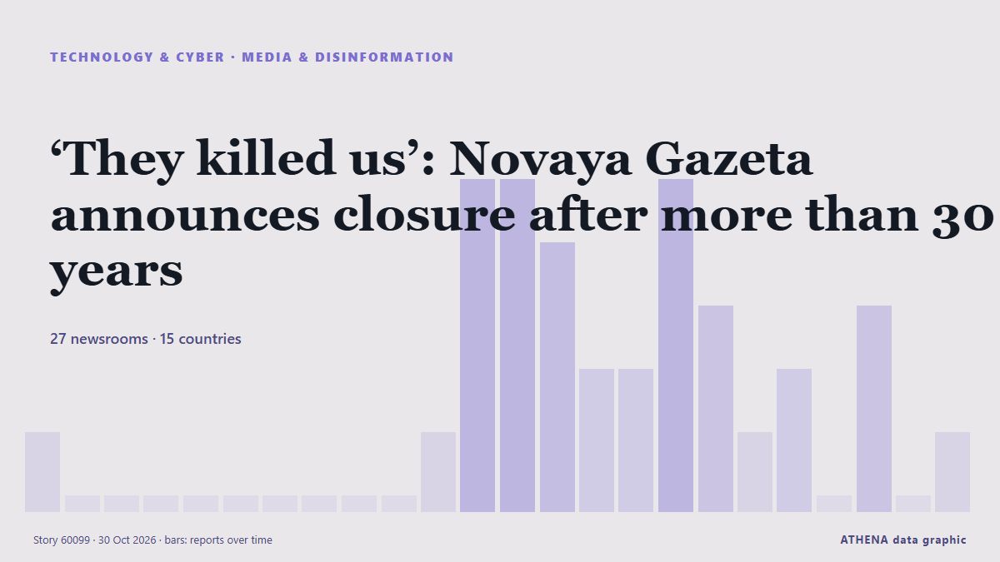

‘They killed us’: Novaya Gazeta announces closure after more than 30 years

Novaya Gazeta, the Moscow-based newspaper founded in 1993, has announced it is closing after more than three decades of work. من Novaya Gazeta Europe (EN)
نشرته بشكل مستقل 27 مصدرًا في 15 دولة منذ 29 أكتوبر، وأول من نشره Meduza (English)؛ والتغطية تتراجع. يقدّر ATHENA الخطر بأنه متزايد (4.8/10)، ويعود ذلك أساسًا إلى خطورة الضرر الموصوف ونطاقه الجغرافي والقطاعي. الثقة 91٪ (مرتفعة)، وعدد المصادر المستقلة المؤكِّدة: 27، بمتوسط موثوقية للمصادر يبلغ 79٪.
لماذا يهم: تشكّل تطورات التكنولوجيا والأمن السيبراني الأمنَ والمنافسة وقواعد الحياة الرقمية.
ما الذي تغيّر: 35 تقارير جديدة من 27 غرف أخبار خلال 24 ساعة حتى 30 أكتوبر.
تُعرض العناوين بالإنجليزية كما نُشرت.
نظرة سريعة
اختير وقُيِّم وكُتب وفق منهجية ATHENA المنشورة. لا يتدخل أي محرر في الأحداث بعينها. كيف يُنتَج ›
| 29 Oct 21:14 UTC | 1 |
|---|---|
| 29 Oct 22:14 UTC | 0 |
| 29 Oct 23:14 UTC | 0 |
| 30 Oct 00:14 UTC | 0 |
| 30 Oct 01:14 UTC | 0 |
| 30 Oct 02:14 UTC | 0 |
| 30 Oct 03:14 UTC | 0 |
| 30 Oct 04:14 UTC | 0 |
| 30 Oct 05:14 UTC | 0 |
| 30 Oct 06:14 UTC | 0 |
| 30 Oct 07:14 UTC | 1 |
| 30 Oct 08:14 UTC | 5 |
| 30 Oct 09:14 UTC | 5 |
| 30 Oct 10:14 UTC | 4 |
| 30 Oct 11:14 UTC | 2 |
| 30 Oct 12:14 UTC | 2 |
| 30 Oct 13:14 UTC | 5 |
| 30 Oct 14:14 UTC | 3 |
| 30 Oct 15:14 UTC | 1 |
| 30 Oct 16:14 UTC | 2 |
| 30 Oct 17:14 UTC | 0 |
| 30 Oct 18:14 UTC | 3 |
| 30 Oct 19:14 UTC | 0 |
| 30 Oct 20:14 UTC | 1 |
| 29 Oct 21:29 UTC | 3.8 |
|---|---|
| 30 Oct 08:24 UTC | 3.0 |
| 30 Oct 09:51 UTC | 5.1 |
| 30 Oct 10:08 UTC | 5.5 |
| 30 Oct 12:59 UTC | 5.6 |
| 30 Oct 14:00 UTC | 6.0 |
| 30 Oct 14:25 UTC | 6.3 |
| 30 Oct 18:33 UTC | 5.2 |
| 30 Oct 21:01 UTC | 4.8 |
لماذا هذه الأرقام
الأهمية
الخطر
الثقة
التغطية — من نشر الخبر ومتى
العنوان كما نُشر · يفتح الأصل- Meduza (English) · روسيا · RussiaThe portraits of dead friends are coming off the walls. After 29 years, Russia’s independent Novaya Gazeta newspaper is being forced out of its Moscow newsroom.
- APA (English) · أذربيجان · AzerbaijanNovaya Gazeta editorial board announces newspaper's closure in Russia
- The Daily Star — page reader · بنغلاديش · BangladeshIndependent Russian newspaper Novaya Gazeta announces closure
- France 24 English · فرنسا · FranceRussia's bastion of free press Novaya Gazeta shuts down under Kremlin pressure
- The Guardian · المملكة المتحدة · United KingdomRussian society being ‘systematically crushed’ says Novaya Gazeta as newspaper announces closure
- Free Malaysia Today · ماليزيا · MalaysiaIndependent Russian newspaper Novaya Gazeta announces its closure
- Novaya Gazeta Europe (EN) · روسيا · Russia‘They killed us’: Novaya Gazeta announces closure after more than 30 years
- eNCA · جنوب أفريقيا · South AfricaIndependent Russian newspaper Novaya Gazeta shuts under Kremlin pressure
- The Straits Times · سنغافورة · SingaporeRussian independent newspaper Novaya Gazeta forced to close its doors
- The Moscow Times · روسيا · RussiaRussia’s Oldest Independent Newspaper, Novaya Gazeta, Announces Closure
- Meduza (English) · روسيا · Russia‘They killed us’: Russian independent newspaper Novaya Gazeta announces its closure after decades of repression
- RFE/RL (English) · INT'They Killed Us': Muckraking Russian Newspaper Novaya Gazeta Announces Closure
- Kyiv Post · أوكرانيا · UkraineIndependent Russian Newspaper Novaya Gazeta Shuts Under Kremlin Pressure
- Novinite · بلغاريا · BulgariaNovaya Gazeta, Symbol of Independent Russian Journalism, Forced to Close
- Al Jazeera English · قطر · QatarRussia ‘forces’ closure of investigative newspaper Novaya Gazeta
- DW English · ألمانيا · GermanyRussia: Critical newspaper 'Novaya Gazeta' to close
- Ukrainska Pravda (English) · أوكرانيا · Ukraine"We've been killed by secret services": Independent Russian newspaper Novaya Gazeta to close after 30 years
- BBC News · المملكة المتحدة · United KingdomThey strangled us, says founder of Russian newspaper shut under pressure from authorities
- Meduza (English) · روسيا · RussiaA statement from from Meduza’s editorial team and fellow journalists in support of Novaya Gazeta
- AzerNews · أذربيجان · AzerbaijanRussia's Novaya Gazeta announces closure after 33 years, citing state pressure
- Kyiv Independent · أوكرانيا · Ukraine'They killed us' – Pressure from Russian authorities forces closure of Novaya Gazeta
- Rappler · الفلبين · PhilippinesRussian independent paper Novaya Gazeta finally forced to close its doors
- Human Rights Watch · الولايات المتحدة · United States“They Killed Us”
- Meduza (English) · روسيا · Russia‘A big bright lighthouse has been swept away by a murky wave’: Russian journalists, writers, and public figures react to Novaya Gazeta’s closure
- The New York Times (World) · الولايات المتحدة · United StatesRussian News Outlet That Defied Kremlin Will Shut Down: ‘They Killed Us’
- ABC News (International) · الولايات المتحدة · United StatesRussia's top independent newspaper shuts down, blaming pressure from authorities
- Amnesty International · المملكة المتحدة · United KingdomRussia: Closure of Novaya Gazeta is a devastating loss for embattled media freedom
- Euronews English · فرنسا · FranceRussian independent newspaper Novaya Gazeta says it will shut down following pressure from Kremlin
- CBS News (World) · الولايات المتحدة · United StatesLast independent newspaper in Russia forced to shut down
- Meduza (English) · روسيا · RussiaReaders gather outside Novaya Gazeta’s Moscow office after independent Russian newspaper announces closure
- France 24 English · فرنسا · FranceRussia’s Novaya Gazeta to cease publication amid Kremlin crackdown
- NDTV · الهند · IndiaIndependent Russian Newspaper Shuts Down Amid Kremlin Pressure
- Meduza (English) · روسيا · RussiaAs Novaya Gazeta, one of Russia’s best-known independent newspapers, is forced to close after 33 years, three former staffers look back on its legacy
- Meduza (English) · روسيا · RussiaCan Russia’s independent newspaper Novaya Gazeta rise from the ashes a third time? Editor Sergey Sokolov discusses what comes next.
- The Daily Star — page reader · بنغلاديش · BangladeshKremlin pressure: Independent Russian newspaper Novaya Gazeta shuts